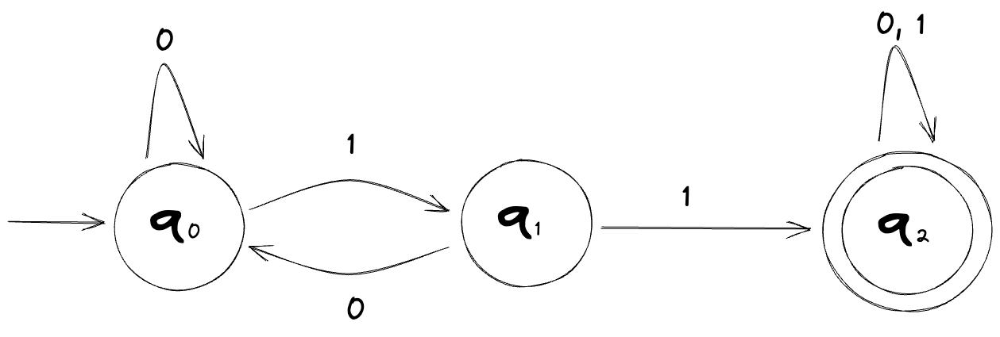
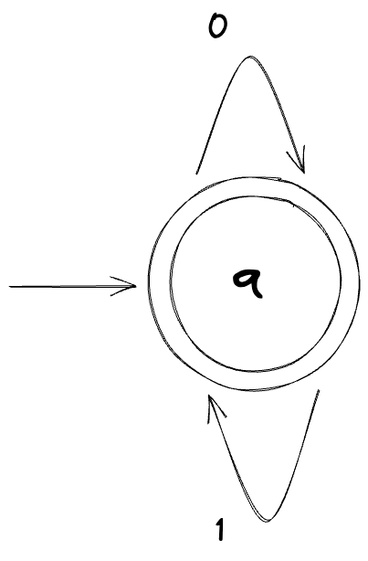
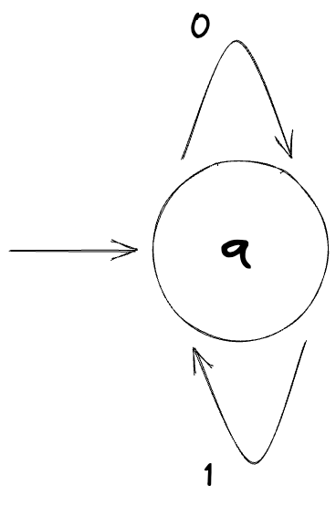
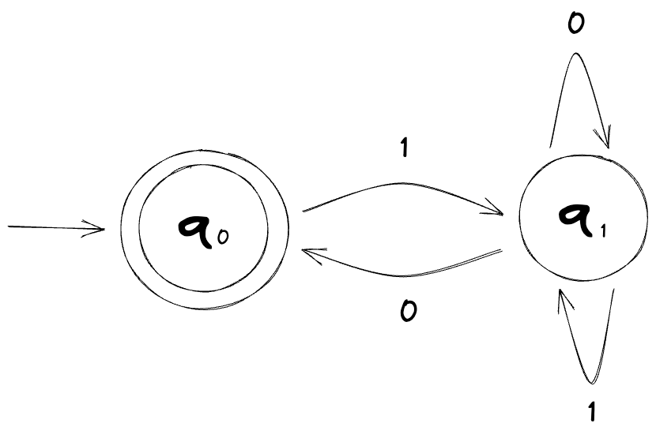
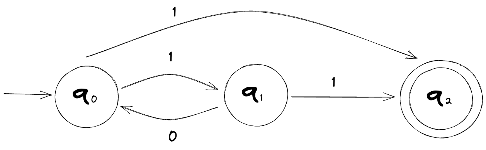
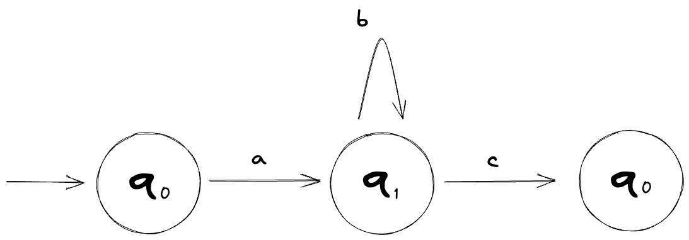
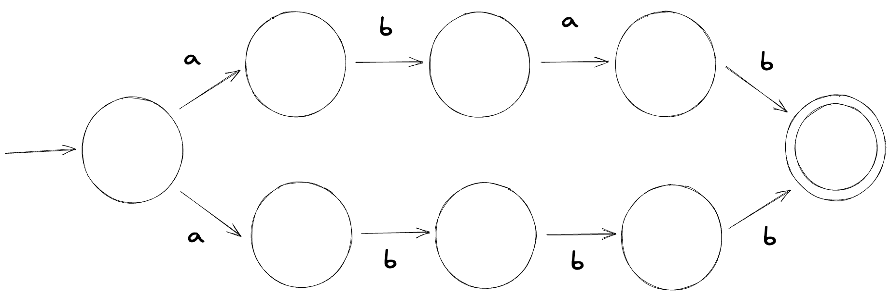
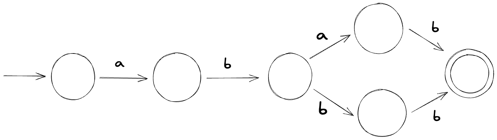

I recently got curious about the inner workings of regular expression engines (the code that executes your regexes) and especially the computer science theory behind regular expressions themselves. So I decided to dig deeper into them by taking a fundamentals-first/bottom-up approach and writing down my learnings in the form of this blog post; kind of like a more polished version of my notes that, if still not useful for anyone else, I can at least come back to in the future.
Before we start, there are a few things to note:
- I will skip some definitions for the sake of brevity.
- Some of these definitions are not rigorously defined in computer science academia and so it's important to remember that many of them are not set in stone and are considered more as approximations.
- Last but not least, keep in mind that I'm not an expert in this topic and this is just me jotting down my thoughts as I learn many of these things for the first time.
With the prelude out of the way, let's start by quickly defining an abstract machine before we start looking at finite automata.
Abstract machines
In theoretical computer science, an abstract machine is a model of computation, a framework or model that describes the functionality of a machine, and what a machine can and cannot do.
The term "machine" here is somewhat interchangeable with "computer" but it's technically not accurate, since a machine can also refer to something theoretical. This is exactly what an abstract machine is actually -- it's theoretical. It ignores many aspects of hardware and focuses instead on the essential aspects of the computation process; something that you can think and reason about using just pen and paper.
They are "abstract" in that they ignore many of the details present in actual (hardware) machines and they are "machines" in that they execute programs one step at a time. Turing Machines, Cellular Automata, Lambda Calculus, and Finite Automata are a few examples of abstract machines.
An abstract machine implemented in software is called a virtual machine. Some examples of this are LLVM, JVM, BEAM (Erlang VM), Android Runtime (ART), and Valgrind.
From here on, note that I will use the terms "machine" and "automaton" interchangeably since we're only dealing in the abstract and not with any physical device.
Finite automata
A finite automaton, or a finite-state machine (FSM), is the simplest model of computation that we can construct. It is an abstract machine that can be in exactly one of a finite number of states at any given time and it changes states in response to an input; this change of state is called a transition.
A finite automaton usually has two special states: a start state at which it starts and an accept state at which it ends, indicating that there's a match. The automaton starts at its start state, reads symbols one at a time from the input string, and follows the corresponding transitions. If the last state it's in is an accept state, it implies that the input string matches.
A string is a finite _sequence_ of symbols. Conceptually, it's very similar to the string data type most programming languages use. All of the following are valid strings that a machine can operate on:
12345,01101,hello,😄😃😆,7#1ab😃.An alphabet is the set of input symbols, even if they are the digits 0 and 1.
Let's look at an example of a finite automaton which we'll call M1:

The start state is the state with the leading arrow attached (q0) and the accept state is the one with the double circle (q2).
Inputting the string 01101 to this machine ends up in an accept state. On the other hand, inputting the string 00101 ends up in a non-accept state, which is usually called a reject.
We'll come back to this shortly but let's do a little detour here. Let's look at examples of the simplest finite automata that can be constructed; ones with only one state.
Here's a machine that accepts all possible strings of 0s and 1s:

And here's a machine that rejects all strings:

Here's a small quiz: what string does the following machine accept (or not accept, for that matter)?

Answer: This machine only accepts an empty string ε (Epsilon) and nothing else.
There is more one than one way of constructing a finite automaton that computes the same string, however, you must be careful when looking to see if two machines are computationally equivalent when dealing with ε (Epsilon), which is the empty string. Although it's an empty string, it's still a valid string.
Let's get back to M1 now. Feel free to take a moment to think about the following: Is there a way to generalize this machine so that we know what input symbols lead to an accept state? In other words, if given an input symbol, how can we tell if it will lead to an accept state or not?
It may or may not be obvious at first glance but the only time this machine will end up in an accept state is when the input string contains the substring 11.
With the above information, we can define this machine, M1, as such:
L(M1) = { w | w contains the substring 11 }
We can also say the following:
- "L(M1) is the language of M1", or
- "M1 recognizes L(M1)"
All three of these lines mean the same thing, they're just expressed in different ways.
The L in L(M1) stands for "Language", and as you might be able to tell from the set notation above, it's defined as being the set of strings that the machine accepts. In the case of M1, its language is the set of all finite strings of 0s and 1s that contain the substring 11.
Another important term that often comes up when talking about languages is regular language. If a given machine is a finite automaton, its language is called a regular language. Likewise, if a given language is recognized by a finite automaton, it is a regular language.
The language of M1, that is L(M1), is a regular language.
We'll shortly see how this relates to regular expressions, but first, we'll need to look a little more at finite automata.
Deterministic and nondeterministic finite automata
When someone says "finite automaton", they're referring to one of the two types of finite automata:
- Deterministic finite automata (DFA)
- Nondeterministic finite automata (NFA)
Wikipedia defines DFA as follows:
- each of its transitions is uniquely determined by its source state and input symbol, and
- reading an input symbol is required for each state transition.
This may be confusing to understand but, simply put, DFA is deterministic in the sense that given any state and any input symbol, there is only one transition defined. The machine is always certain about its next state and where to transition to.
The machine M1, shown above, is a DFA.
On the contrary, NFA is nondeterministic in that for a given state and an input symbol, there might be several possible next states or none at all. The machine has a degree of uncertainty about its next state.
Here's what an NFA might look like:

A DFA is a special case - a subset - of an NFA. Anything that a DFA can do, an NFA can do as well.
Now that we've looked at DFAs and NFAs, I think it's a good time to look at regular expressions.
Regular expressions
Drawing state diagrams like the ones above whenever you need to think about or use finite automata can become a hassle. The mathematician Stephen Kleene wanted a way to describe regular languages more compactly, and so he came up with regular expressions in 1951.
A regular expression describes a finite automaton. As a matter of fact, a regular expression is a finite automaton, and vice versa.
(By the way, finite automata and regular expressions are also equivalent to the Type-3 grammar in the Chomsky hierarchy, which I won't go into detail here.)
For the regular expression ab*c, we can create the following DFA:

The * here in the regular expression is a regular operator (much like how there are arithmetic operators) called a closure or Kleene star (or just a star). It concatenates strings in the language zero or more times; ab*c will match ac, abc, abbc, abbbc, abbbc.. you get the idea.
However, things get a little trickier if we decide to do more with regular expressions. Suppose we wanted to create a finite automaton for the regular expression abab|abbb. We can construct one like so (the state labels are excluded because I'm too lazy to put them all in when we're not going to use them anyways):

This automaton is an NFA, so how can the machine know what state to transition next to? It can try and make a guess but issues can occur if the guess ends up being incorrect. We can fix this by converting this NFA to a DFA:

You might be wondering what if the NFA cannot be converted into a DFA -- can NFAs always be converted into DFAs?
The answer turns out to be yes. The proof for that is out of the scope of this blog post but you can check out the paper "Finite Automata and Their Decision Problems" if you're interested.
However, there is a caveat. For the proof to work and to guarantee that your NFA can be converted into a DFA, you have to strictly stick to a finite automaton. Many modern regular expression engines are augmented with features that do not strictly adhere to this theoretical computer science definition.
Summary
I might write another post in the future that goes into more detail on one or several of the topics we touched here but I think I'll wrap up this post here. We started by looking at a definition for abstract machines and then moved on to finite automata, both deterministic and nondeterministic ones, and finally looked a little more closely at regular expressions.
I did not mention some of the more formal and mathematical definitions (eg. a finite automata is a 5-tuple defined as M = (Q, Σ, δ, q0, F); looking up what the different symbols mean will be an exercise for you, the reader, if you're interested). I also did not go into detail of the implementation of regular expression engines, but Russ Cox has written some great stuff on the topic.
I'd love to get your feedback and comments. You can reach out to me on X or at arashnawy[at]gmail.com.